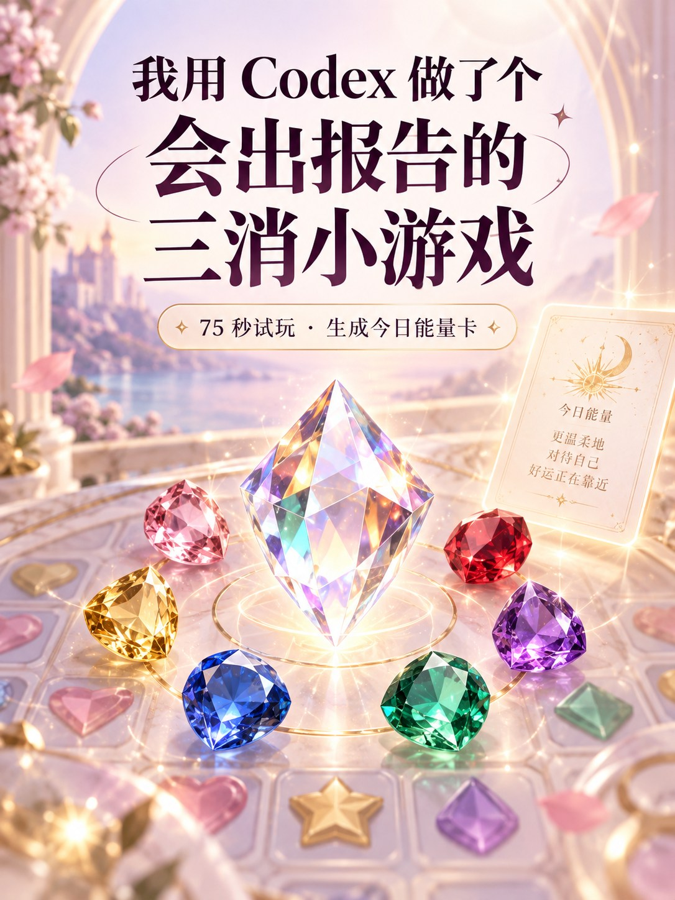

抖音号uuzhang_2020，
小红书 搜索 闪亮的uu
我用 Codex 做了个
会出报告的三消小游戏
75 秒消除攒能量，最后生成一张「今日宝石报告卡」。这就是视频里的同款项目提示词。
怎么用
新手也可以从零开始- 1
在 Codex 中打开一个空白文件夹
- 2
复制主提示词，交给 Codex 开始制作
- 3
试玩后，再按需要复制后续迭代提示词
包含主提示词和 5 组迭代提示词 · 从空白文件夹即可开始